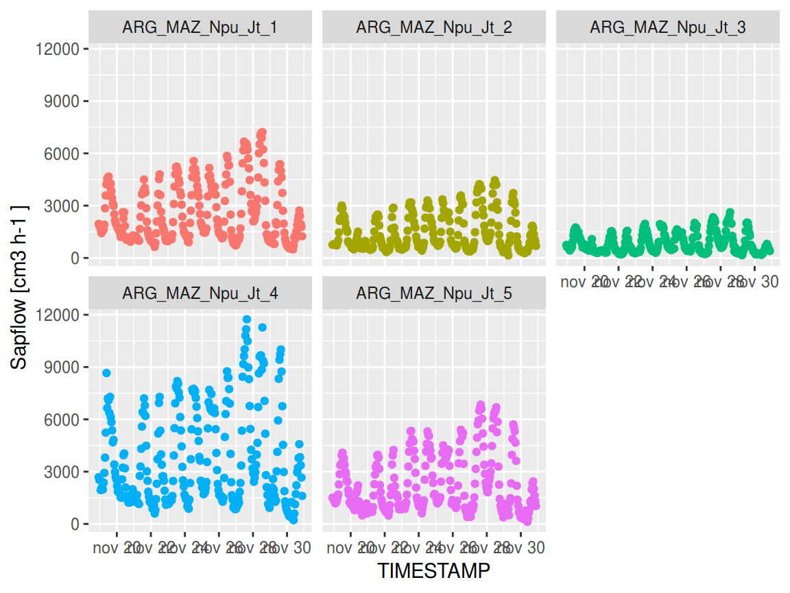
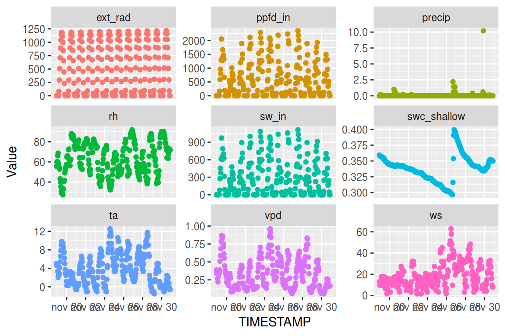
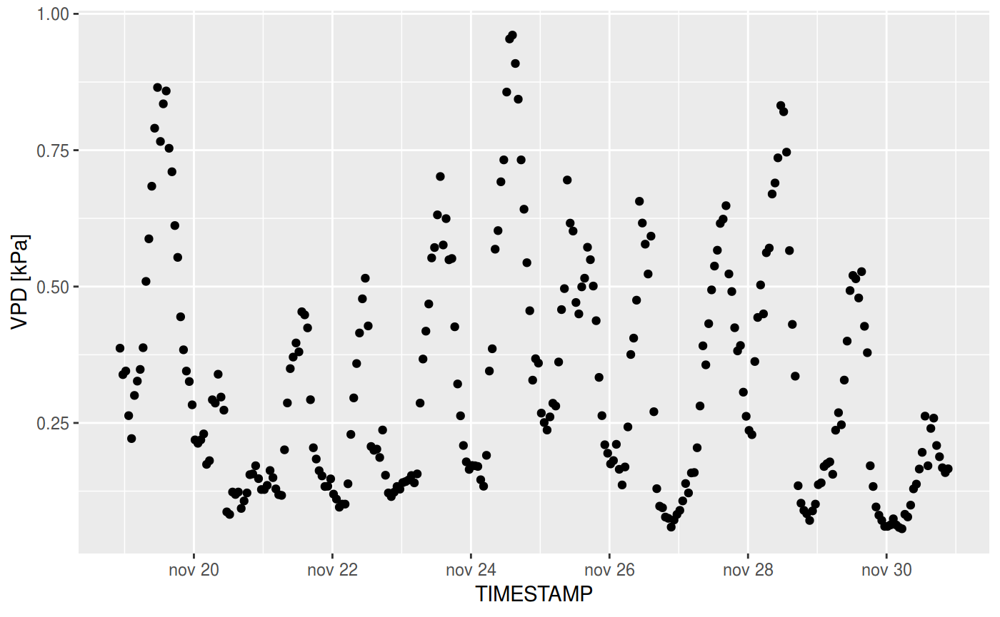
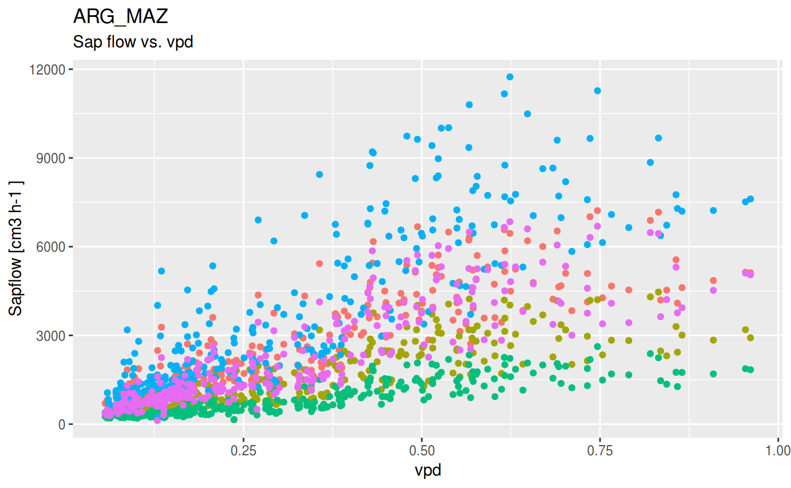
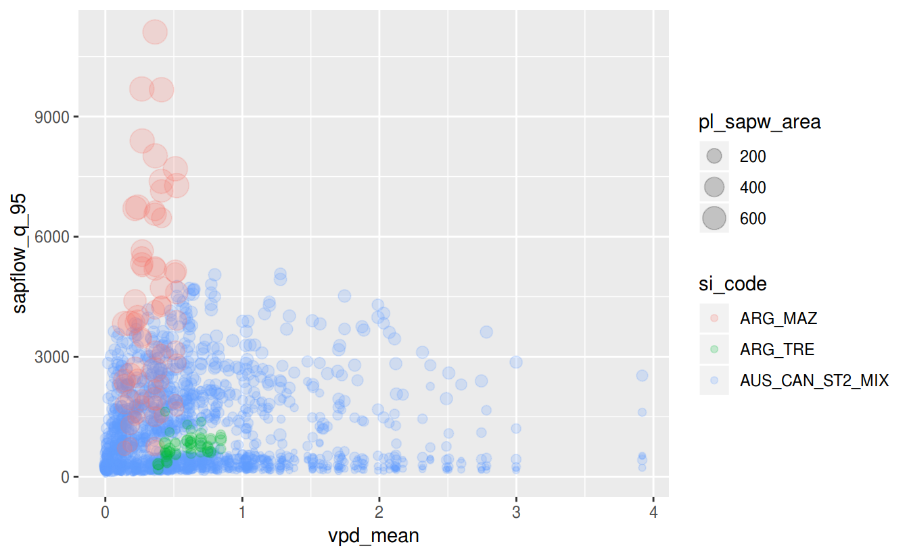

vignettes/sapfluxnetr-quick-guide.Rmd
sapfluxnetr-quick-guide.Rmdsapfluxnetr R package provides tools for a tidy data analysis for the first sap flow measurements global database (SAPFLUXNET Project). In this vignette you will learn how to install the package, download the data and get started with some data metrics.
sapfluxnetr is not yet in CRAN, so the installation must be done with the remotes package:
# if (!require(remotes)) {install.packages('remotes')}
remotes::install_github(
'sapfluxnet/sapfluxnetr',
build_opts = c("--no-resave-data", "--no-manual", "--build-vignettes")
)Development versions of the package reside in github. If you want the latest updates, and also the latest bugs ( be advised ;) ), please install the devel branch of the github repository with the devtools package:
# if (!require(remotes)) {install.packages('remotes')}
remotes::install_github(
'sapfluxnet/sapfluxnetr', ref = 'devel',
build_opts = c("--no-resave-data", "--no-manual", "--build-vignettes")
)Now you can load the package, along with the tidyverse package, as it will be needed later:
library(sapfluxnetr)
# if (!require(tidyverse)) {install.packages('tidyverse')}
library(tidyverse)
#> ── Attaching packages ───────────────────────────────────────────────────────────────────── tidyverse 1.2.1 ──
#> ✔ ggplot2 3.1.0 ✔ purrr 0.3.0
#> ✔ tibble 2.0.0 ✔ dplyr 0.7.8
#> ✔ tidyr 0.8.2 ✔ stringr 1.3.1
#> ✔ readr 1.3.1 ✔ forcats 0.3.0
#> ── Conflicts ──────────────────────────────────────────────────────────────────────── tidyverse_conflicts() ──
#> ✖ dplyr::filter() masks stats::filter()
#> ✖ dplyr::lag() masks stats::lag()During the embargo period (2019-03-05 to 2020-03-05) only the data contributors can access the data. If you are a data contributor willing to access the data, follow these steps:
Request access button, fill the form and click the Send request button.SAPFLUXNET database estrucuture is as follows:
0.1.3 (database version number)
|
|-- RData
| |
| |-- plant
| |-- sapwood
| |-- leaf
|
|-- csv
| |
| |-- plant
| |-- sapwood
| |-- leafRData folder contains the RData files for each site divided by sap flow units level:
plant sites with sap flow plant level units available.sapwood sites with sap flow sapwood level units available.leaf sites with sap flow leaf level units available.csv folder contains the csv files (9 files, 5 of metadata, 2 of data and 2 more for the data flags) for each units level available and site. We do not provide scripts or functions to work with the csv files, only the RData objects.
To start working with the data, you have two options:
If working in RStudio, create a project in the data root folder (0.1.3 in this example) and follow the examples in this vignette to get started.
If not, set the data root folder (0.1.3 in this example) as the working directory with setwd and follow the examples in this vignette to get started.
DISCLAIMER: In order to be able to build the vignette in the CRAN tests the following examples will be based on a small subset of SAPFLUXNET Data, composed by
ARG_TRE,ARG_MAZandAUS_CAN_ST2_MIXsites. Outputs may vary if you follow the vignette examples with the complete database.
First, let’s get used to the data structure that SAPFLUXNET provides, and for that we will choose a site and start playing with it.
In this example we will use the ARG_MAZ site, as it is small and it will be fast seeing the package capabilities. There are sites like FRA_PUE 100 times bigger than this, but as one can imagine, the time is also increasing when analising those bigger datasets.
So, let’s read the data in the environment:
# read the data
arg_maz <- read_sfn_data('ARG_MAZ', folder = 'RData/plant')
# see a brief summary of the site:
arg_maz#> sfn_data object
#> Data from ARG_MAZ site
#>
#> Data kindly provided by Sebastian Pfautsch from University of Sydney
#> and Pablo Peri from Instituto Nacional de Tecnología Agropecuaria
#>
#> Site related literature: DOI 10.1007/s00468-013-0935-4
#>
#> Sapflow data: 288 observations of 5 trees/plants
#> Species present: Nothofagus pumilio
#>
#> Environmental data: 288 observations.
#> Variables present:
#> ta rh vpd sw_in ws precip swc_shallow ppfd_in ext_rad
#>
#> Biome: Mediterranean
#>
#> TIMESTAMP span: 2009-11-19 -03--2009-11-30 23:00:00 -03
#>
#> Solar TIMESTAMP span: 2009-11-18 22:24:18 UTC--2009-11-30 21:20:24 UTC
#>
#> Sapflow data flags:
#> No flags present
#>
#> Environmental data flags:
#> RANGE_WARN OUT_WARN CALCULATED
#> 9 17 576At first glance, we know by this summary that is an Argentinian forest (first three letters of the site code are always the country code), contributed by Sebastian Pfautsch and Pablo Peri with 5 Nothofagus pumilio trees measured along 15 days in 2009. Also we can see the environmental variables measured (ta, rh, vpd, sw_in, ws, precip, swc_shallow, ppfd_in and ext_rad) and the biome classification. Finally, we can see that the environmental data has some flags (more on that later).
sfn_data objects have different slots containing the different data, each of one has an accesor function (see ?sfn_get_methods and vignette('sfn-data-classes', package = 'sapfluxnetr' for detailed info):
# sapf data with original site timestamp
arg_maz_sapf <- get_sapf_data(arg_maz, solar = FALSE)
arg_maz_sapf
#> # A time tibble: 288 x 6
#> # Index: TIMESTAMP
#> TIMESTAMP ARG_MAZ_Npu_Jt_1 ARG_MAZ_Npu_Jt_2 ARG_MAZ_Npu_Jt_3
#> <dttm> <dbl> <dbl> <dbl>
#> 1 2009-11-19 00:00:00 1955. 754. 742.
#> 2 2009-11-19 01:00:00 1833. 752. 631.
#> 3 2009-11-19 02:00:00 1817. 795. 597.
#> 4 2009-11-19 03:00:00 1598. 788. 579.
#> 5 2009-11-19 04:00:00 1419. 780. 518.
#> 6 2009-11-19 05:00:00 1506. 735. 430.
#> 7 2009-11-19 06:00:00 1649. 720. 539.
#> 8 2009-11-19 07:00:00 1630. 882. 542.
#> 9 2009-11-19 08:00:00 1909. 1015. 655.
#> 10 2009-11-19 09:00:00 2849. 1459. 930.
#> # … with 278 more rows, and 2 more variables: ARG_MAZ_Npu_Jt_4 <dbl>,
#> # ARG_MAZ_Npu_Jt_5 <dbl>
# env_data with calculated aparent solar time
arg_maz_env <- get_env_data(arg_maz, solar = TRUE)
arg_maz_env
#> # A time tibble: 288 x 10
#> # Index: TIMESTAMP
#> TIMESTAMP ta rh vpd sw_in ws precip swc_shallow
#> <dttm> <dbl> <dbl> <dbl> <dbl> <dbl> <dbl> <dbl>
#> 1 2009-11-18 22:24:18 4.99 55.6 0.387 0 12.9 0 0.359
#> 2 2009-11-18 23:24:18 4.57 60 0.339 0 9.7 0 0.359
#> 3 2009-11-19 00:24:02 4.99 60.4 0.345 0 11.3 0 0.358
#> 4 2009-11-19 01:24:02 3.31 66 0.263 0 9.7 0.2 0.357
#> 5 2009-11-19 02:24:02 2.03 68.7 0.221 0 12.9 0 0.357
#> 6 2009-11-19 03:24:02 2.46 58.8 0.300 0 17.7 0 0.356
#> 7 2009-11-19 04:24:02 2.46 55.2 0.327 0 17.7 0 0.356
#> 8 2009-11-19 05:24:02 2.89 53.7 0.348 3 14.5 0 0.356
#> 9 2009-11-19 06:24:02 4.15 52.8 0.388 78 9.7 0 0.356
#> 10 2009-11-19 07:24:02 5.4 43.2 0.509 275 11.3 0 0.355
#> # … with 278 more rows, and 2 more variables: ppfd_in <dbl>, ext_rad <dbl>You can see that the TIMESTAMP variable changes between both kinds of data. That is because the TIMESTAMP returned is controled by the solar parameter (see ?sfn_get_methods).
Metadata can be accesed in the same way:
arg_maz_site_md <- get_site_md(arg_maz)
arg_maz_site_md
#> # A tibble: 1 x 24
#> si_addcontr_ema… si_addcontr_fir… si_addcontr_ins… si_addcontr_las…
#> <chr> <chr> <chr> <chr>
#> 1 peri.pablo@inta… Pablo Instituto Nacio… Peri
#> # … with 20 more variables: si_code <chr>, si_contact_email <chr>,
#> # si_contact_firstname <chr>, si_contact_institution <chr>,
#> # si_contact_lastname <chr>, si_country <chr>, si_dendro_network <lgl>,
#> # si_dist_mgmt <chr>, si_elev <int>, si_flux_network <lgl>,
#> # si_igbp <chr>, si_lat <dbl>, si_long <dbl>, si_name <chr>,
#> # si_paper <chr>, si_remarks <lgl>, is_inside_country <lgl>,
#> # si_mat <dbl>, si_map <dbl>, si_biome <chr>
arg_maz_stand_md <- get_stand_md(arg_maz)
arg_maz_stand_md
#> # A tibble: 1 x 18
#> st_age st_aspect st_basal_area st_clay_perc st_density st_growth_condi…
#> <int> <chr> <dbl> <lgl> <int> <chr>
#> 1 180 E 59.1 NA 518 Naturally regen…
#> # … with 12 more variables: st_height <int>, st_lai <lgl>, st_name <lgl>,
#> # st_remarks <lgl>, st_sand_perc <lgl>, st_silt_perc <lgl>,
#> # st_soil_depth <lgl>, st_soil_texture <chr>, st_terrain <chr>,
#> # st_treatment <lgl>, si_code <chr>, st_USDA_soil_texture <chr>
arg_maz_species_md <- get_species_md(arg_maz)
arg_maz_species_md
#> # A tibble: 1 x 5
#> sp_basal_area_perc sp_leaf_habit sp_name sp_ntrees si_code
#> <int> <chr> <chr> <int> <chr>
#> 1 100 cold deciduous Nothofagus pumilio 5 ARG_MAZ
arg_maz_plant_md <- get_plant_md(arg_maz)
arg_maz_plant_md
#> # A tibble: 5 x 26
#> pl_age pl_azimut_int pl_bark_thick pl_code pl_dbh pl_height pl_leaf_area
#> <int> <chr> <dbl> <chr> <dbl> <lgl> <dbl>
#> 1 180 Corrected, m… 14.7 ARG_MA… 41.1 NA 109.
#> 2 180 No azimuthal… 13 ARG_MA… 33.2 NA 58.4
#> 3 180 No azimuthal… 6 ARG_MA… 23.2 NA 35.0
#> 4 180 No azimuthal… 21 ARG_MA… 55.6 NA 174.
#> 5 180 No azimuthal… 10 ARG_MA… 38 NA 88
#> # … with 19 more variables: pl_name <chr>, pl_radial_int <chr>,
#> # pl_remarks <lgl>, pl_sap_units <chr>, pl_sapw_area <dbl>,
#> # pl_sapw_depth <dbl>, pl_sens_calib <lgl>, pl_sens_cor_grad <chr>,
#> # pl_sens_cor_zero <chr>, pl_sens_hgt <dbl>, pl_sens_length <int>,
#> # pl_sens_man <chr>, pl_sens_meth <chr>, pl_sens_timestep <int>,
#> # pl_social <chr>, pl_species <chr>, pl_treatment <lgl>, si_code <chr>,
#> # pl_sap_units_orig <chr>
arg_maz_env_md <- get_env_md(arg_maz)
arg_maz_env_md
#> # A tibble: 1 x 17
#> env_leafarea_se… env_netrad env_plant_watpot env_ppfd_in env_precip
#> <lgl> <chr> <chr> <chr> <chr>
#> 1 NA Not provi… leaf: midday Not provid… Clearing
#> # … with 12 more variables: env_remarks <lgl>, env_rh <chr>,
#> # env_swc_deep_depth <lgl>, env_swc_shallow_depth <int>,
#> # env_sw_in <chr>, env_ta <chr>, env_time_daylight <lgl>,
#> # env_timestep <int>, env_time_zone <chr>, env_vpd <chr>, env_ws <chr>,
#> # si_code <chr>If in doubt about some of the metadata variables (what it means, units…) a description can be obtained from describe_md_variable function:
# what is env_ta?
describe_md_variable('env_ta')
#> Description:
#> Location of air temperature sensor
#>
#> Values:
#> Above canopy | Within canopy | Clearing | Off-site | Not provided |
#>
#> Units:
#> Fixed values
#>
#> Type:
#> Character
# or pl_species?
describe_md_variable('pl_species')
#> Description:
#> Species identity of the measured plant
#>
#> Values:
#> Contributor defined |
#>
#> Units:
#> Scientific name without author abbreviation, as accepted by The Plant List
#>
#> Type:
#> CharacterThere is also some accessors that can come in handy sometimes. get_timestamp and get_solar_timestamp access to the original timestamp and the apparent solar time timestamp. get_si_code access to the site code. See vignette('sfn-data-classes', package = 'sapfluxnetr' for more info.
sfn_data objects also have two more slots, accesed with get_sapf_flags and get_env_flags.
arg_maz_sapf_flags <- get_sapf_flags(arg_maz, solar = TRUE)
arg_maz_sapf_flags
#> # A time tibble: 288 x 6
#> # Index: TIMESTAMP
#> TIMESTAMP ARG_MAZ_Npu_Jt_1 ARG_MAZ_Npu_Jt_2 ARG_MAZ_Npu_Jt_3
#> <dttm> <chr> <chr> <chr>
#> 1 2009-11-18 22:24:18 "" "" ""
#> 2 2009-11-18 23:24:18 "" "" ""
#> 3 2009-11-19 00:24:02 "" "" ""
#> 4 2009-11-19 01:24:02 "" "" ""
#> 5 2009-11-19 02:24:02 "" "" ""
#> 6 2009-11-19 03:24:02 "" "" ""
#> 7 2009-11-19 04:24:02 "" "" ""
#> 8 2009-11-19 05:24:02 "" "" ""
#> 9 2009-11-19 06:24:02 "" "" ""
#> 10 2009-11-19 07:24:02 "" "" ""
#> # … with 278 more rows, and 2 more variables: ARG_MAZ_Npu_Jt_4 <chr>,
#> # ARG_MAZ_Npu_Jt_5 <chr>
arg_maz_env_flags <- get_env_flags(arg_maz, solar = TRUE)
arg_maz_env_flags
#> # A time tibble: 288 x 10
#> # Index: TIMESTAMP
#> TIMESTAMP ta rh vpd sw_in ws precip swc_shallow
#> <dttm> <chr> <chr> <chr> <chr> <chr> <chr> <chr>
#> 1 2009-11-18 22:24:18 "" "" "" "" "" "" ""
#> 2 2009-11-18 23:24:18 "" "" "" "" "" "" ""
#> 3 2009-11-19 00:24:02 "" "" "" "" "" "" ""
#> 4 2009-11-19 01:24:02 "" "" "" "" "" OUT_W… ""
#> 5 2009-11-19 02:24:02 "" "" "" "" "" "" ""
#> 6 2009-11-19 03:24:02 "" "" "" "" "" "" ""
#> 7 2009-11-19 04:24:02 "" "" "" "" "" "" ""
#> 8 2009-11-19 05:24:02 "" "" "" "" "" "" ""
#> 9 2009-11-19 06:24:02 "" "" "" "" "" "" ""
#> 10 2009-11-19 07:24:02 "" "" "" "" "" "" ""
#> # … with 278 more rows, and 2 more variables: ppfd_in <chr>, ext_rad <chr>This datsets store any flag that each data point may have (possible outlier, data removed in the Quality Check of the data…). For a complete list of flags possible values see vignette('data-flags', package = 'sapfluxnetr'). As an example, let’s see which values are marked as “RANGE_WARN” (a warning indicating that the value may be out of normal variable range):
arg_maz_env_flags %>%
filter_all(any_vars(stringr::str_detect(., 'RANGE_WARN')))
#> # A time tibble: 9 x 10
#> # Index: TIMESTAMP
#> TIMESTAMP ta rh vpd sw_in ws precip swc_shallow
#> <dttm> <chr> <chr> <chr> <chr> <chr> <chr> <chr>
#> 1 2009-11-25 13:22:41 "" "" "" "" RANG… "" ""
#> 2 2009-11-26 08:22:30 "" "" "" "" RANG… "" ""
#> 3 2009-11-26 09:22:30 "" "" "" "" RANG… "" ""
#> 4 2009-11-26 10:22:31 "" "" "" "" RANG… "" ""
#> 5 2009-11-26 11:22:31 "" "" "" "" RANG… "" ""
#> 6 2009-11-26 12:22:32 "" "" "" "" RANG… "" ""
#> 7 2009-11-26 13:22:32 "" "" "" "" RANG… "" ""
#> 8 2009-11-28 10:21:09 "" "" "" "" RANG… "" ""
#> 9 2009-11-28 12:21:09 "" "" "" "" RANG… "" ""
#> # … with 2 more variables: ppfd_in <chr>, ext_rad <chr>We see that the out of range warnings refer to wind variable. We can cross the data to see which values of wind speed are giving the warnings,
arg_maz_env_flags %>%
filter_all(any_vars(stringr::str_detect(., 'RANGE_WARN'))) %>%
semi_join(arg_maz_env, ., by = 'TIMESTAMP') %>%
select(TIMESTAMP, ws)
#> # A time tibble: 9 x 2
#> # Index: TIMESTAMP
#> TIMESTAMP ws
#> <dttm> <dbl>
#> 1 2009-11-25 13:22:41 45.1
#> 2 2009-11-26 08:22:30 48.3
#> 3 2009-11-26 09:22:30 51.5
#> 4 2009-11-26 10:22:31 48.3
#> 5 2009-11-26 11:22:31 62.8
#> 6 2009-11-26 12:22:32 57.9
#> 7 2009-11-26 13:22:32 48.3
#> 8 2009-11-28 10:21:09 46.7
#> 9 2009-11-28 12:21:09 48.3and confirm that the warnings refer to values above the “usual” wind speed maximum.
We can also plot the different data with the help of sfn_plot function. It will return ggplot objects that can be modified afterwards:
sfn_plot(arg_maz, type = 'sapf', solar = TRUE) +
facet_wrap(~ Tree) + theme(legend.position = 'none')
sfn_plot(arg_maz, type = 'env', solar = TRUE) +
facet_wrap(~ Variable, scales = 'free_y') + theme(legend.position = 'none')
We can also plot environmental variables individually (with the type argument), or an environmental variable versus the sap flow measurements (with the formula_env argument). See ?sfn_plot for a complete description of the available plots.
# vpd individually
sfn_plot(arg_maz, type = 'vpd', solar = TRUE)
# vpd vs sapf
sfn_plot(arg_maz, formula_env = ~vpd, solar = TRUE) +
theme(legend.position = 'none')
SAPFLUXNET data is stored as subdaily measures with different timestep between sites (ranging from 10 minutes to 2 hours) for both, sap flow and environmental data. Aggregation metrics are calculated for both kinds of data.sapfluxnetr offers some simple, yet complete aggregation functions returning some pre-defined metrics: daily_metrics, monthly_metrics, predawn_metrics, midday_metrics, daylight_metrics and nightly_metrics.daily_metrics and monthly_metrics perform a daily and monthly aggregation, respectively, with a set of predefined metrics. predawn_metrics, midday_metrics, daylight_metrics and nightly_metrics perform daily or monthly aggregations (controlled by the period argument) by hour-defined intervals, also with a set of predefined metrics.
Predefined metrics are:
daily_metrics, see ?diurnal_centroid for limitations in the calculation of this metric)Let’s see some examples:
arg_maz_daily <- daily_metrics(arg_maz, solar = TRUE)
#> [1] "Crunching data for ARG_MAZ. In large datasets this could take a while"
#> [1] "General data for ARG_MAZ"
names(arg_maz_daily)
#> [1] "sapf" "env"
names(arg_maz_daily[['sapf']])
#> [1] "TIMESTAMP" "ARG_MAZ_Npu_Jt_1_mean"
#> [3] "ARG_MAZ_Npu_Jt_2_mean" "ARG_MAZ_Npu_Jt_3_mean"
#> [5] "ARG_MAZ_Npu_Jt_4_mean" "ARG_MAZ_Npu_Jt_5_mean"
#> [7] "ARG_MAZ_Npu_Jt_1_sd" "ARG_MAZ_Npu_Jt_2_sd"
#> [9] "ARG_MAZ_Npu_Jt_3_sd" "ARG_MAZ_Npu_Jt_4_sd"
#> [11] "ARG_MAZ_Npu_Jt_5_sd" "ARG_MAZ_Npu_Jt_1_coverage"
#> [13] "ARG_MAZ_Npu_Jt_2_coverage" "ARG_MAZ_Npu_Jt_3_coverage"
#> [15] "ARG_MAZ_Npu_Jt_4_coverage" "ARG_MAZ_Npu_Jt_5_coverage"
#> [17] "ARG_MAZ_Npu_Jt_1_q_95" "ARG_MAZ_Npu_Jt_2_q_95"
#> [19] "ARG_MAZ_Npu_Jt_3_q_95" "ARG_MAZ_Npu_Jt_4_q_95"
#> [21] "ARG_MAZ_Npu_Jt_5_q_95" "ARG_MAZ_Npu_Jt_1_centroid"
#> [23] "ARG_MAZ_Npu_Jt_2_centroid" "ARG_MAZ_Npu_Jt_3_centroid"
#> [25] "ARG_MAZ_Npu_Jt_4_centroid" "ARG_MAZ_Npu_Jt_5_centroid"
names(arg_maz_daily[['env']])
#> [1] "TIMESTAMP" "ta_mean" "rh_mean"
#> [4] "vpd_mean" "sw_in_mean" "ws_mean"
#> [7] "precip_mean" "swc_shallow_mean" "ppfd_in_mean"
#> [10] "ext_rad_mean" "ta_sd" "rh_sd"
#> [13] "vpd_sd" "sw_in_sd" "ws_sd"
#> [16] "precip_sd" "swc_shallow_sd" "ppfd_in_sd"
#> [19] "ext_rad_sd" "ta_coverage" "rh_coverage"
#> [22] "vpd_coverage" "sw_in_coverage" "ws_coverage"
#> [25] "precip_coverage" "swc_shallow_coverage" "ppfd_in_coverage"
#> [28] "ext_rad_coverage" "ta_q_95" "rh_q_95"
#> [31] "vpd_q_95" "sw_in_q_95" "ws_q_95"
#> [34] "precip_q_95" "swc_shallow_q_95" "ppfd_in_q_95"
#> [37] "ext_rad_q_95" "precip_accumulated"We can see that results are divided in sapf and env and inside each of them the metrics are indicated by the end of the variable names.
This way we can select specific variables, for example the 0.95 quantiles of sap flow measures:
arg_maz_daily[['sapf']] %>%
select(TIMESTAMP, ends_with('q_95'))
#> # A time tibble: 13 x 6
#> # Index: TIMESTAMP
#> TIMESTAMP ARG_MAZ_Npu_Jt_… ARG_MAZ_Npu_Jt_… ARG_MAZ_Npu_Jt_…
#> <dttm> <dbl> <dbl> <dbl>
#> 1 2009-11-18 00:00:00 1949. 754. 736.
#> 2 2009-11-19 00:00:00 4603. 2835. 1692.
#> 3 2009-11-20 00:00:00 2561. 1289. 801.
#> 4 2009-11-21 00:00:00 4001. 2459. 1508.
#> 5 2009-11-22 00:00:00 4396. 2761. 1466.
#> 6 2009-11-23 00:00:00 5192. 3160. 1842.
#> 7 2009-11-24 00:00:00 5135. 3160. 1879.
#> 8 2009-11-25 00:00:00 4724. 3077. 1522.
#> 9 2009-11-26 00:00:00 5642. 3449. 1845.
#> 10 2009-11-27 00:00:00 6560. 4174. 2251.
#> 11 2009-11-28 00:00:00 7142. 4288. 2362.
#> 12 2009-11-29 00:00:00 5319. 3494. 2000.
#> 13 2009-11-30 00:00:00 2408. 1804. 711.
#> # … with 2 more variables: ARG_MAZ_Npu_Jt_4_q_95 <dbl>,
#> # ARG_MAZ_Npu_Jt_5_q_95 <dbl>The same is applicable to the environmental data, in this case the mean values:
arg_maz_daily[['env']] %>%
select(TIMESTAMP, ends_with('mean'))
#> # A time tibble: 13 x 10
#> # Index: TIMESTAMP
#> TIMESTAMP ta_mean rh_mean vpd_mean sw_in_mean ws_mean
#> <dttm> <dbl> <dbl> <dbl> <dbl> <dbl>
#> 1 2009-11-18 00:00:00 4.78 57.8 0.363 0 11.3
#> 2 2009-11-19 00:00:00 5.56 45.7 0.521 300. 12.0
#> 3 2009-11-20 00:00:00 1.39 73.5 0.181 134. 12.6
#> 4 2009-11-21 00:00:00 2.44 69.6 0.236 207. 14.2
#> 5 2009-11-22 00:00:00 2.21 71.9 0.216 282. 15.8
#> 6 2009-11-23 00:00:00 3.19 56.7 0.364 335. 11.4
#> 7 2009-11-24 00:00:00 6.16 52.1 0.511 312. 13.7
#> 8 2009-11-25 00:00:00 6.11 58.5 0.409 250. 21.7
#> 9 2009-11-26 00:00:00 4.99 72.4 0.269 218. 34.2
#> 10 2009-11-27 00:00:00 4.98 61.2 0.363 336. 25.8
#> 11 2009-11-28 00:00:00 5.87 61.6 0.411 212. 25.2
#> 12 2009-11-29 00:00:00 1.45 63.6 0.266 246. 17.7
#> 13 2009-11-30 00:00:00 0.299 78.0 0.140 241. 18.0
#> # … with 4 more variables: precip_mean <dbl>, swc_shallow_mean <dbl>,
#> # ppfd_in_mean <dbl>, ext_rad_mean <dbl>If interested in custom metrics or custom aggregations, there is a generic function, sfn_metrics that allows for customization of the statistics to calculate and the periods to aggregate. See ?sfn_metrics and vignette('custom-aggregation'. package = 'sapfluxnetr') for more details about it.
It’s worth to mention that aggregated TIMESTAMPS are fixed to the beginning of the period aggregated, meaning that data from 2018-01-01 00:00:00 to 2018-01-01 23:59:59 are aggregated as 2018-01-01 00:00:00.
You can change this using the side parameter (see ?sfn_metrics)
The default returned object for this aggregation functions is a list with the sap flow and the environmental data, but given that usually is more confortable to have all data (sap flow and environmental) and ancillary data (metadata) altogether in a tidy data frame (each row an observation), all aggregation functions have an argument, tidy that can be setted to TRUE to obtain this kind of data frame. We will cover this in the “Tidy metrics” section.
Getting the insights about one site is interesting, but getting the insights of a common group of sites could be even more interesting. sapfluxnetr allows filtering sites by metadata values (biomes, countries, species…) and work with them as a unique set.
First thing we have to do is creating a metadata database. It is not mandatory, but filtering sites by metadata can be a very time and resources consuming step if we have to temporary build the database each time we want filter sites. So, let’s create a cached metadata database. This will take some minutes, so maybe it is a good moment to prepare a hot beverage ;)
#> [1] "processing site ARG_MAZ (1 of 3)"
#> [1] "processing site ARG_TRE (2 of 3)"
#> [1] "processing site AUS_CAN_ST2_MIX (3 of 3)"The important bit here is .write_cache = TRUE. This will write a file called .metadata_cache.RData containing all the metadata for all sites present in folder. This file will be used any time we will filter the metadata, so there is no need of accessing all the data again.
If we take a look at sfn_metadata we can see a list with 5 data frames, one for each metadata class (site, stand, species, plant and environmental metadata).
# access plant metadata
sfn_metadata[['plant_md']]
#> # A tibble: 43 x 26
#> pl_age pl_azimut_int pl_bark_thick pl_code pl_dbh pl_height pl_leaf_area
#> <dbl> <chr> <dbl> <chr> <dbl> <dbl> <dbl>
#> 1 180 Corrected, m… 14.7 ARG_MA… 41.1 NA 109.
#> 2 180 No azimuthal… 13 ARG_MA… 33.2 NA 58.4
#> 3 180 No azimuthal… 6 ARG_MA… 23.2 NA 35.0
#> 4 180 No azimuthal… 21 ARG_MA… 55.6 NA 174.
#> 5 180 No azimuthal… 10 ARG_MA… 38 NA 88
#> 6 140 Corrected, m… 23.5 ARG_TR… 23.6 NA 29.7
#> 7 140 No azimuthal… 22.5 ARG_TR… 20.2 NA 13.0
#> 8 140 No azimuthal… 22 ARG_TR… 23.8 NA 29.8
#> 9 140 No azimuthal… 23.5 ARG_TR… 19.5 NA 15.1
#> 10 14.5 No azimuthal… NA AUS_CA… 13.1 14.3 NA
#> # … with 33 more rows, and 19 more variables: pl_name <chr>,
#> # pl_radial_int <chr>, pl_remarks <chr>, pl_sap_units <chr>,
#> # pl_sapw_area <dbl>, pl_sapw_depth <dbl>, pl_sens_calib <lgl>,
#> # pl_sens_cor_grad <chr>, pl_sens_cor_zero <chr>, pl_sens_hgt <dbl>,
#> # pl_sens_length <int>, pl_sens_man <chr>, pl_sens_meth <chr>,
#> # pl_sens_timestep <int>, pl_social <chr>, pl_species <chr>,
#> # pl_treatment <chr>, si_code <chr>, pl_sap_units_orig <chr>Now that we have our metadata database built, we can inspect the site codes in a folder with sfn_sites_in_folder:
#> [1] "ARG_MAZ" "ARG_TRE" "AUS_CAN_ST2_MIX"We can filter these sites by any metadata variable, to select those that met some criteria. This is done with filter_sites_by_md. As a first try, let’s list all sites belonging to temperate forest biome (mediterranean included):
temperate <- sfn_sites_in_folder(folder) %>%
filter_sites_by_md(
si_biome %in% c('Mediterranean', 'Temperate forest'),
metadata = sfn_metadata
)
temperate#> [1] "ARG_MAZ" "ARG_TRE" "AUS_CAN_ST2_MIX"You can combine all filters you want:
temperate_hr <- sfn_sites_in_folder(folder) %>%
filter_sites_by_md(
si_biome %in% c('Mediterranean', 'Temperate forest'),
pl_sens_meth == 'HR',
metadata = sfn_metadata
)
temperate_hr#> [1] "ARG_MAZ" "ARG_TRE"Remember that you can get all the info from a metadata variable with describe_md_variable, and also you can get a complete list of metadata variables for filtering with sfn_vars_to_filter:
sfn_vars_to_filter()
#> $site_md
#> [1] "si_name" "si_country"
#> [3] "si_contact_firstname" "si_contact_lastname"
#> [5] "si_contact_email" "si_contact_institution"
#> [7] "si_addcontr_firstname" "si_addcontr_lastname"
#> [9] "si_addcontr_email" "si_addcontr_institution"
#> [11] "si_lat" "si_long"
#> [13] "si_elev" "si_paper"
#> [15] "si_dist_mgmt" "si_igbp"
#> [17] "si_flux_network" "si_dendro_network"
#> [19] "si_remarks" "si_code"
#> [21] "si_mat" "si_map"
#> [23] "si_biome"
#>
#> $stand_md
#> [1] "st_name" "st_growth_condition" "st_treatment"
#> [4] "st_age" "st_height" "st_density"
#> [7] "st_basal_area" "st_lai" "st_aspect"
#> [10] "st_terrain" "st_soil_depth" "st_soil_texture"
#> [13] "st_sand_perc" "st_silt_perc" "st_clay_perc"
#> [16] "st_remarks" "st_USDA_soil_texture"
#>
#> $species_md
#> [1] "sp_name" "sp_ntrees" "sp_leaf_habit"
#> [4] "sp_basal_area_perc"
#>
#> $plant_md
#> [1] "pl_name" "pl_species" "pl_treatment"
#> [4] "pl_dbh" "pl_height" "pl_age"
#> [7] "pl_social" "pl_sapw_area" "pl_sapw_depth"
#> [10] "pl_bark_thick" "pl_leaf_area" "pl_sens_meth"
#> [13] "pl_sens_man" "pl_sens_cor_grad" "pl_sens_cor_zero"
#> [16] "pl_sens_calib" "pl_sap_units" "pl_sap_units_orig"
#> [19] "pl_sens_length" "pl_sens_hgt" "pl_sens_timestep"
#> [22] "pl_radial_int" "pl_azimut_int" "pl_remarks"
#> [25] "pl_code"
#>
#> $env_md
#> [1] "env_time_zone" "env_time_daylight"
#> [3] "env_timestep" "env_ta"
#> [5] "env_rh" "env_vpd"
#> [7] "env_sw_in" "env_ppfd_in"
#> [9] "env_netrad" "env_ws"
#> [11] "env_precip" "env_swc_shallow_depth"
#> [13] "env_swc_deep_depth" "env_plant_watpot"
#> [15] "env_leafarea_seasonal" "env_remarks"
# and see what values we must use for filtering by pl_sens_meth
describe_md_variable('pl_sens_meth')
#> Description:
#> Sap flow measures method
#>
#> Values:
#> CAG | HD | CHP | CHD | HFD | HPTM | HR | SFPLUS | SHB | TSHB | Other/unknown |
#>
#>
#> Units:
#> Fixed values
#>
#> Type:
#> CharacterWe can load all temperate sites with a simple pipe
#> sfn_data_multi object
#> 3 sites: ARG_MAZ ARG_TRE AUS_CAN_ST2_MIX
#> Approximate time span (UTC) for the combined sites: 2006-06-20 10:54:42 UTC--2009-11-18 22:24:18 UTCThis creates an sfn_data_multi object, which is just a list, but adapted to contain sfn_data objects. Main functions of sapfluxnetr work with this type of objects. As in any list, we can access the sites:
temperate_sites[['AUS_CAN_ST2_MIX']]
#> sfn_data object
#> Data from AUS_CAN_ST2_MIX site
#>
#> Data kindly provided by David Forrester from
#> Swiss Federal Institute for Forest, Snow and Landscape Research WSL
#>
#> Site related literature: 10.1016/j.foreco.2009.07.036
#>
#> Sapflow data: 17808 observations of 34 trees/plants
#> Species present: Eucalyptus globulus, Acacia mearnsii
#>
#> Environmental data: 17808 observations.
#> Variables present:
#> ta vpd sw_in ws precip ppfd_in rh ext_rad
#>
#> Biome: Mediterranean
#>
#> TIMESTAMP span: 2006-06-20 11:00:00 +10--2007-06-26 10:30:00 +10
#>
#> Solar TIMESTAMP span: 2006-06-20 10:54:42 UTC--2007-06-26 10:23:32 UTC
#>
#> Sapflow data flags:
#> OUT_REMOVED NA_ADDED OUT_WARN NA_PRESENT
#> 40 3400 5460 504952
#>
#> Environmental data flags:
#> OUT_WARN NA_ADDED CALCULATED
#> 10826 15320 53424
# temperate_sites[[3]] # the same
# temperate_sites$AUS_CAN_ST2_MIX # the sameNow we can aggregate all sites at once
temperate_aggregated <- temperate_sites %>%
daily_metrics()
#> [1] "Crunching data for ARG_MAZ. In large datasets this could take a while"
#> [1] "General data for ARG_MAZ"
#> [1] "Crunching data for ARG_TRE. In large datasets this could take a while"
#> [1] "General data for ARG_TRE"
#> [1] "Crunching data for AUS_CAN_ST2_MIX. In large datasets this could take a while"
#> [1] "General data for AUS_CAN_ST2_MIX"
names(temperate_aggregated)
#> [1] "ARG_MAZ" "ARG_TRE" "AUS_CAN_ST2_MIX"and voilà, all sites aggregated and stored in a list, so we can start working with the data.
Most of the times it comes in handy to have a tidy dataset with all the sap flow and environmental measurements, along with the metadata for the sites aggregated, in order to work with the data in an easier way. This can be done with the metrics_tidyfier function (see ?metrics_tidyfier). But daily_metrics and related functions also implement the tidy argument. For the tidy argument to work, we must have available the metadata, see the “metadata section” for more details about this.
This allows for returning directly a metrics data frame combining all sites aggregated along with their metadata, saving one step in the workflow:
temperate_tidy <- temperate_sites %>%
daily_metrics(tidy = TRUE, metadata = sfn_metadata)
#> [1] "Crunching data for ARG_MAZ. In large datasets this could take a while"
#> [1] "General data for ARG_MAZ"
#> [1] "Crunching data for ARG_TRE. In large datasets this could take a while"
#> [1] "General data for ARG_TRE"
#> [1] "Crunching data for AUS_CAN_ST2_MIX. In large datasets this could take a while"
#> [1] "General data for AUS_CAN_ST2_MIX"
temperate_tidy
#> # A tibble: 12,769 x 129
#> TIMESTAMP si_code pl_code sapflow_centroid sapflow_coverage
#> <dttm> <chr> <chr> <dbl> <dbl>
#> 1 2006-06-20 00:00:00 AUS_CA… AUS_CA… NaN 0
#> 2 2006-06-20 00:00:00 AUS_CA… AUS_CA… NaN 0
#> 3 2006-06-20 00:00:00 AUS_CA… AUS_CA… NaN 0
#> 4 2006-06-20 00:00:00 AUS_CA… AUS_CA… NaN 0
#> 5 2006-06-20 00:00:00 AUS_CA… AUS_CA… NaN 0
#> 6 2006-06-20 00:00:00 AUS_CA… AUS_CA… NaN 0
#> 7 2006-06-20 00:00:00 AUS_CA… AUS_CA… NaN 0
#> 8 2006-06-20 00:00:00 AUS_CA… AUS_CA… NaN 0
#> 9 2006-06-20 00:00:00 AUS_CA… AUS_CA… NaN 0
#> 10 2006-06-20 00:00:00 AUS_CA… AUS_CA… NaN 0
#> # … with 12,759 more rows, and 124 more variables: sapflow_mean <dbl>,
#> # sapflow_q_95 <dbl>, sapflow_sd <dbl>, ta_mean <dbl>, rh_mean <dbl>,
#> # vpd_mean <dbl>, sw_in_mean <dbl>, ws_mean <dbl>, precip_mean <dbl>,
#> # swc_shallow_mean <dbl>, ppfd_in_mean <dbl>, ext_rad_mean <dbl>,
#> # ta_sd <dbl>, rh_sd <dbl>, vpd_sd <dbl>, sw_in_sd <dbl>, ws_sd <dbl>,
#> # precip_sd <dbl>, swc_shallow_sd <dbl>, ppfd_in_sd <dbl>,
#> # ext_rad_sd <dbl>, ta_coverage <dbl>, rh_coverage <dbl>,
#> # vpd_coverage <dbl>, sw_in_coverage <dbl>, ws_coverage <dbl>,
#> # precip_coverage <dbl>, swc_shallow_coverage <dbl>,
#> # ppfd_in_coverage <dbl>, ext_rad_coverage <dbl>, ta_q_95 <dbl>,
#> # rh_q_95 <dbl>, vpd_q_95 <dbl>, sw_in_q_95 <dbl>, ws_q_95 <dbl>,
#> # precip_q_95 <dbl>, swc_shallow_q_95 <dbl>, ppfd_in_q_95 <dbl>,
#> # ext_rad_q_95 <dbl>, precip_accumulated <dbl>, pl_age <dbl>,
#> # pl_azimut_int <chr>, pl_bark_thick <dbl>, pl_dbh <dbl>,
#> # pl_height <dbl>, pl_leaf_area <dbl>, pl_name <chr>,
#> # pl_radial_int <chr>, pl_remarks <chr>, pl_sap_units <chr>,
#> # pl_sapw_area <dbl>, pl_sapw_depth <dbl>, pl_sens_calib <lgl>,
#> # pl_sens_cor_grad <chr>, pl_sens_cor_zero <chr>, pl_sens_hgt <dbl>,
#> # pl_sens_length <int>, pl_sens_man <chr>, pl_sens_meth <chr>,
#> # pl_sens_timestep <int>, pl_social <chr>, pl_species <chr>,
#> # pl_treatment <chr>, pl_sap_units_orig <chr>, si_addcontr_email <chr>,
#> # si_addcontr_firstname <chr>, si_addcontr_institution <chr>,
#> # si_addcontr_lastname <chr>, si_contact_email <chr>,
#> # si_contact_firstname <chr>, si_contact_institution <chr>,
#> # si_contact_lastname <chr>, si_country <chr>, si_dendro_network <lgl>,
#> # si_dist_mgmt <chr>, si_elev <int>, si_flux_network <lgl>,
#> # si_igbp <chr>, si_lat <dbl>, si_long <dbl>, si_name <chr>,
#> # si_paper <chr>, si_remarks <chr>, is_inside_country <lgl>,
#> # si_mat <dbl>, si_map <dbl>, si_biome <chr>, st_age <dbl>,
#> # st_aspect <chr>, st_basal_area <dbl>, st_clay_perc <lgl>,
#> # st_density <int>, st_growth_condition <chr>, st_height <dbl>,
#> # st_lai <dbl>, st_name <chr>, st_remarks <lgl>, st_sand_perc <lgl>,
#> # st_silt_perc <lgl>, st_soil_depth <int>, …Now we can start analysing, modelling, etc.
For example, to look for site effects in the relationship between sapflow and vpd, using the 0.95 quantiles as maximum values of sapflow and the plant sapwood area as a third variable:
ggplot(
temperate_tidy,
aes(x = vpd_mean, y = sapflow_q_95, colour = si_code, size = pl_sapw_area)
) +
geom_point(alpha = 0.2)
#> Warning: Removed 10966 rows containing missing values (geom_point).